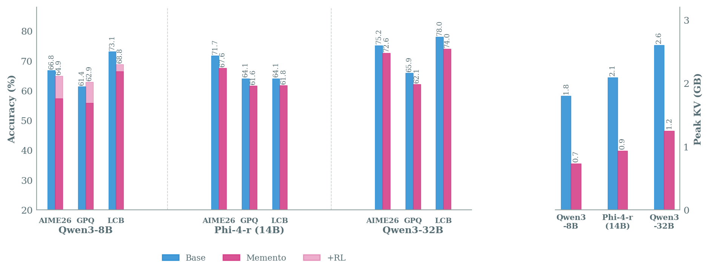
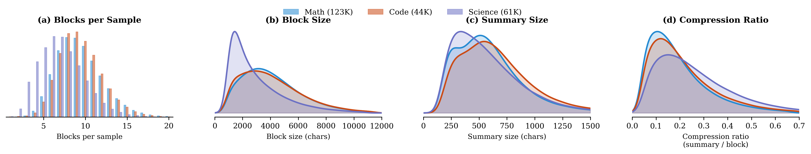
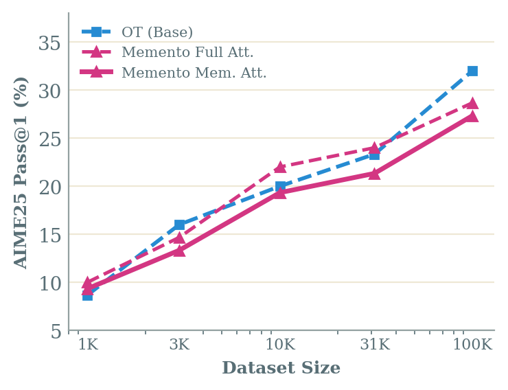
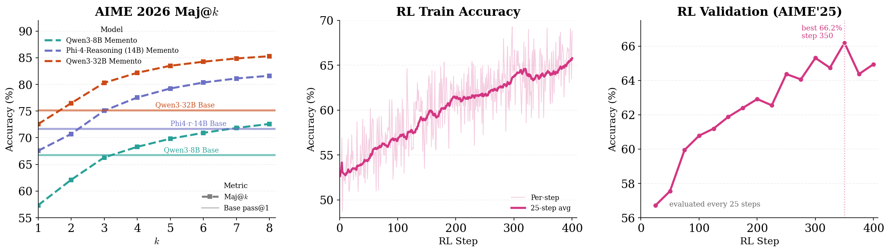
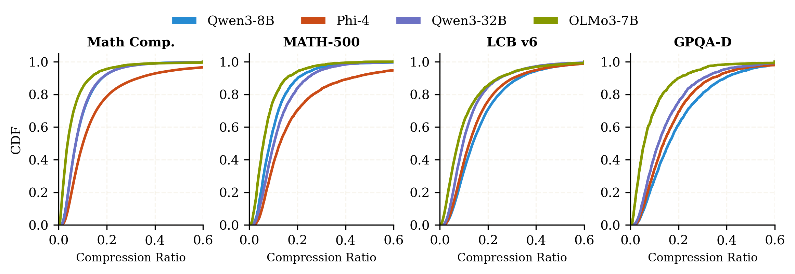
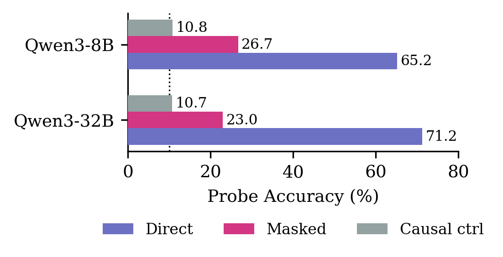
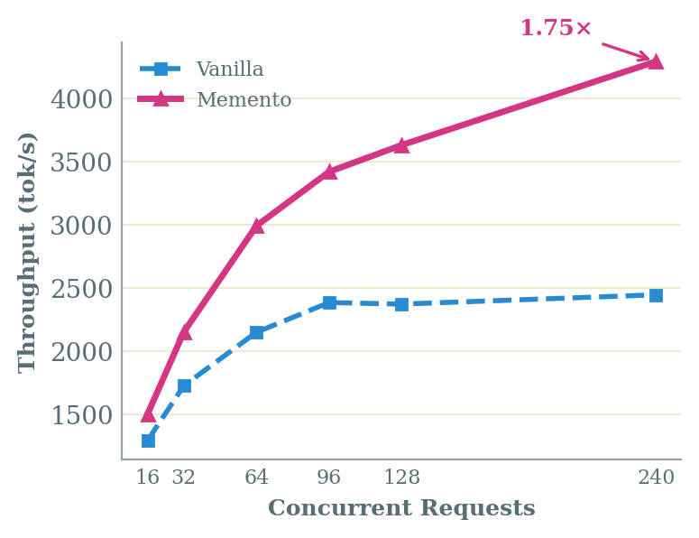

TL;DR
- You can teach a model to segment its CoT into blocks, compact each into a dense memento, and reason forward from that. Standard SFT on ~30K examples suffices.
- Context management can and should be a learned capability, not orchestrated around the model.
- This reduces peak KV cache by 2–3× and yields 1.75× serving throughput, with small accuracy gaps that close with RL and/or scale.
- Erased blocks don’t fully disappear! Their information persists in the KV representations of mementos that were computed while the blocks were still visible. This is an implicit second stream of information without which performance significantly degrades.
- We are releasing the OpenMementos dataset (228K annotated traces), and the data generation & inference code.
The Problem: LLMs Don’t Know How to Manage Their Context
It’s well established at this point that reasoning models can solve hard problems by producing a lot of tokens. Test-time compute works and has led to dramatic advances on competition-level math and coding, but it can also result in a single inference call producing hundreds of thousands of tokens. That is roughly the length of a book. All these tokens stay in memory, attended to at equal cost, whether they lead somewhere or not. The model has no built-in mechanism to compact what it has figured out, keep the conclusions, and move on.
There are ways to manage this externally—run a separate summarizer, restart API calls with condensed context, build orchestration logic around the model. However, these are all systems bolted around the model rather than skills the model itself has learned. We think figuring out what to remember and what to forget can and should be a skill that the model learns during training.
Memento teaches language models exactly this. A Memento-trained model segments its reasoning into semantically coherent blocks. When a block is complete, the model produces a memento: a terse, information-dense compression of the block’s conclusions, key intermediate values, formulas, and strategic decisions. Think of a memento as a lemma: a minimal record of what future reasoning steps need to continue.
Once a memento is generated, the preceding thinking block is masked from attention and its KV cache entries are flushed away. From that point on, the model sees only past mementos plus whatever block it is currently working through. This means context grows while the model is reasoning through a block, but then it drops sharply once the memento is produced and the block is evicted. This gives rise to a sawtooth pattern where peak memory stays at a fraction of what a standard flat CoT trace would require.
Importantly, all of this happens within a single generation call, with no restarts, separate summarizers, or orchestration layers involved. The model segments, compresses, and masks its own reasoning by itself. Here’s what that looks like on a real problem—press Play to watch the model think:
We applied Memento to five models: Qwen2.5-7B, Qwen3-8B and 32B, Phi-4 Reasoning (14B), and OLMo3-7B-Think. It works across all of them. Peak KV cache drops by 2–3× with small accuracy gaps that shrink with scale and close further with RL. These gaps trace back to consistency rather than capability. That is, the mementified models can still solve the same problems, just slightly less reliably. We believe much of this is due to the mismatch between the training data distribution and the target model, rather than any fundamental limitation of compression itself.

How Do You Teach Context Management? Add It in the Training Data!
Teaching this behavior requires training data that didn’t quite exist: large-scale, high-quality reasoning traces segmented into blocks, each paired with a memento that captures the block’s conclusions in a way the model can reason forward from. The intuition is straightforward: if you take reasoning traces, segment them, add proper summaries, and SFT on the result, maybe the model learns to do context management on its own. It sounds simple, but as with many things there were several components that broke along the way and had to be fixed.
We decided to build on top of OpenThoughts: reasoning traces generated by QwQ-32B that are already reasonably high-quality and widely used by the community, which saves us from generating everything from scratch. Now the question is: how to go from raw traces to segmented, annotated ones with mementos at each block boundary? The challenge is that reasoning traces have no natural segment boundaries—ideas mix together, calculations span multiple sentences, and where to “cut” the CoT depends much more on meaning than on formatting or any other obvious indicator.
We tried the obvious thing first: paste a trace into a frontier model and ask it to segment and summarize directly. This does not work! Not even if you cut the trace into pieces first, because you don’t know where to cut. Finding good partitions requires simultaneously reasoning about block coherence, size balance, and semantic boundaries, which is a tricky combinatorial optimization that LLMs struggle to do in one shot.
So we factored the problem into parts. First, we segment each trace into atomic units—sentences, code blocks, math equations—that can’t be meaningfully divided further. Then an LLM scores each inter-sentence boundary from 0 (mid-thought, would break flow) to 3 (major transition, natural stopping point). This is a local question and LLMs handle local questions very well. The global optimization of where to actually place boundaries given these scores is then handled algorithmically, maximizing boundary quality while penalizing uneven block sizes. This kind of constrained combinatorial optimization is hard for an LLM to do in one shot, but straightforward to solve algorithmically.
Once we have segmented traces, we need to compress each block. A compressor LLM produces a memento for each one, and we explicitly frame the task not as summarization but as state compression: produce something compact enough that the model could continue reasoning from the memento alone, without ever seeing the original block. A separate judge LLM evaluates each memento across six dimensions (formulas extracted, values preserved, methods named, validation included, no hallucinations, result-first structure) and if the score falls short, the judge provides specific, actionable feedback—not “more details needed” but “missing formula: $K^2 - 3K + 3$”—and the compressor retries.
This iterative refinement turned out to be crucial. Single-pass compression barely hits a 28% pass rate on our rubric, because initial mementos typically miss exact formulas or intermediate values that downstream blocks depend on. Two rounds of judge feedback bring the pass rate to 92%.
(For all LLM calls in the pipeline we used GPT-5.x, but any sufficiently capable model should work. The full pipeline is open and we hope people use it, improve it, and build better datasets than ours.)
The final dataset, OpenMementos, contains 228K annotated traces consisting of 54% math, 19% code, 27% science problems. We measured that mementos resulted in roughly 6× trace-level compression: about 10,900 tokens of reasoning compacted to under 2,000 tokens of mementos per trace.

Training: How to Put Pressure on the Model
We use a two-stage SFT procedure on OpenMementos that separates format learning from context management. The intuition follows standard curriculum learning: first let the model acquire the block-memento format under normal conditions, then introduce the harder constraint of operating without access to masked content.
Stage 1 (Full Attention): Standard causal attention over all tokens. Loss is computed on all tokens, including thinking blocks, mementos, special tokens, and the final answer. The model learns the block-memento format without any context management pressure.
Stage 2 (Memento Attention): After each completed memento, the preceding thinking block is masked from all subsequent attention. This teaches the model to produce self-contained mementos that carry all information needed for downstream reasoning.
When starting with already strong reasoning models, we found that training for more epochs on fewer samples is more effective than training on more samples with fewer epochs. We train on 31K samples from the 228K OpenMementos pool with 32K sequence length; further gains are more effectively achieved through RL than through additional supervised data. For models that already reason well (Qwen3, OLMo3, Phi-4-reasoning), two stages suffice; non-reasoning base models like Qwen 2.5 7B need a preliminary round of standard reasoning SFT first.

How Does Compaction Affect Accuracy?
The natural concern with Memento is that attending to fewer tokens should hurt accuracy. And when we first looked at the numbers, there was a drop. Where does it come from?
Our initial reaction was that it must be the sparsity: the model is seeing far less context, so of course it gets worse. But then we ran control studies, and the picture turned out to be more interesting.
The key insight is that we train on OpenThoughts traces generated by QwQ-32B, which is a different and often weaker model than the ones we’re fine-tuning. Several of our target models were released after QwQ and are arguably stronger. So we ran a control: take each base model, SFT it on the same raw OpenThoughts traces (no block structure, no mementos), and measure the accuracy drop from that alone. It turns out that just doing SFT on another model’s reasoning traces already costs you something. When we compare Memento against that control rather than the untouched baseline, the additional drop from compression is small, and in some cases negligible.
| AIME’26 | Comp. Math | MATH-500 | GPQA-D | LCB v6 | |||||||
|---|---|---|---|---|---|---|---|---|---|---|---|
| Val | Δ | Val | Δ | Val | Δ | Val | Δ | Val | Δ | ||
| Base | Acc | 66.8 | 54.3 | 90.5 | 61.4 | 73.1 | |||||
| Peak KV | 2.41 | 2.71 | 0.84 | 1.23 | 1.76 | ||||||
| AUC KV | 25.3 | 30.9 | 4.3 | 6.6 | 15.6 | ||||||
| Control | Acc | 64.7 | 49.2 | 89.7 | 57.8 | 70.0 | |||||
| Peak KV | 2.59 | 2.82 | 0.88 | 1.60 | 1.89 | ||||||
| AUC KV | 28.3 | 33.1 | 4.7 | 11.8 | 19.2 | ||||||
| Memento | Acc | 57.3 | −7.4 | 45.1 | −4.1 | 90.1 | +0.4 | 55.8 | −2.0 | 66.5 | −3.5 |
| Peak KV | 1.02 | 0.39× | 1.08 | 0.38× | 0.41 | 0.47× | 0.56 | 0.35× | 0.60 | 0.32× | |
| AUC KV | 9.7 | 0.34× | 10.7 | 0.32× | 1.9 | 0.40× | 4.0 | 0.34× | 5.6 | 0.29× | |
| Mem. + RL | Acc | 64.9 | +0.2 | 49.4 | +0.2 | 91.0 | +1.3 | 62.9 | +5.1 | 68.8 | −1.2 |
| Peak KV | 1.45 | 0.56× | 1.48 | 0.52× | 0.68 | 0.77× | 1.24 | 0.77× | 1.12 | 0.59× | |
| AUC KV | 14.9 | 0.53× | 16.4 | 0.50× | 3.2 | 0.68× | 9.2 | 0.78× | 10.3 | 0.54× | |
But we were still curious about whatever accuracy gap remained. So we asked: can the model still solve the same problems? We generated 64 completions per problem across all three model families on AIME 2024/25/26, and the answer is overwhelmingly yes. The overlap between the problems solved by the base model and by Memento averages 96.4%, hitting 100% in some settings. The model retains the capability to solve these problems—what drops is the consistency of solving them on any single attempt.
This is an important distinction because it means the gap is closable. Even majority voting at $k{=}3$ is enough for the Memento model to match not just the control but the original baseline. This confirms that the capability is still there in the distribution.

The natural next step was RL, and unsurprisingly it works: fine-tuning the Qwen3-8B Memento checkpoint with CISPO recovers AIME’26 and GPQA-Diamond scores (sometimes actually exceeding the vanilla baseline), while the KV savings remain substantial after RL.
Scale also helps independently, even without RL. Going from Qwen3-8B to 32B, the gap shrinks considerably even though both models are trained on the same QwQ-32B traces—the larger model handles the distribution mismatch and the compression constraint more gracefully.
How much compression does Memento actually achieve at inference time? The figure below shows CDFs of per-problem compression ratios (memento tokens / block tokens) across four benchmark categories. Most problems land below 0.2, meaning the model compresses each block to under 20% of its original size. The compression is tightest on competition math (where blocks are longer and more compressible) and loosest on GPQA-Diamond (shorter, denser scientific reasoning).

The Dual Information Stream
Early in the project, there were a lot of discussions about how inference should actually work. The simplest approach, and the one that would make our lives much easier, is restarts: every time a memento is produced, kill the KV cache and start a fresh API call with just the accumulated memento text. No need to implement non-causal sparse attention inside vLLM, which turned out to be a huge pain. Just restart the call.
But we kept coming back to a concern: under memento attention, block content is masked for future tokens, but the memento’s KV values were computed during generation while the model could still attend to the full block. Do these KV states carry useful information beyond the memento text itself?
We denote thinking block i as $T_i$ and its corresponding memento as $M_i$. We compare two inference modes on the same Qwen3-8B checkpoint:
- Memento attention (normal): While generating $M_i$, the model attends to all tokens in $T_i$ as well as the prompt and all preceding mementos. Once $M_i$ is complete, $T_i$ is masked from all subsequent attention—but $M_i$’s KV cache entries, which were computed with block context, are retained. Future tokens therefore attend to memento KV states that implicitly encode block content.
- Memento attention + restart: Generation of each memento proceeds in two steps:
- Step 1 (generation): $M_i$’s text is generated identically to normal memento attention—the model attends to $T_i$ and produces the same summary tokens.
- Step 2 (KV recomputation): After $M_i$ is complete, we discard the KV cache and run a fresh prefill pass over the effective context: prompt + $M_1$ + $M_2$ + … + $M_i$ (with standard causal masking). Critically, all past blocks are now masked and each memento’s KV entries are recomputed attending only to the prompt and preceding mementos, not to the block it originally summarized.
The generated memento text is identical in both conditions; only the KV representations differ. This isolates the question: does the information encoded in the KV states (from having attended to the block during generation) matter beyond what the memento text conveys?
This distinguishes Memento from prior iterative summarization methods like InftyThink and Accordion-Thinking, which discard original tokens entirely after summarization. Unlike those methods, Memento retains the KV cache, and this retention is critical.
Probing the Implicit KV Channel
But what information do the KV states carry? We designed a probing experiment: inject a random 5-digit passcode (00000–99999) into the content of a target block $T_2$ in a real AIME’25 reasoning trace, then run a forward pass with block masking. We extract KV states from memento token positions and train a probe to predict the 5 individual digits. Three conditions:
- Direct: Probe $M_2$’s KV states, which can attend to $T_2$. Upper bound on information in a single memento’s KV.
- Masked: Probe $M_3$’s KV states, which cannot attend to $T_2$ (already evicted). Any signal here must have propagated through the memento chain.
- Causal control: Probe $M_1$’s KV states, which precede $T_2$. Sanity check—expect 10% chance.

| Qwen3-8B | Qwen3-32B | |||
|---|---|---|---|---|
| Direct | Masked | Direct | Masked | |
| 4th layer (early) | 51.6 | 10.8 | 53.8 | 12.8 |
| Last layer | 64.9 | 26.5 | 68.7 | 22.4 |
| Both layers | 65.2 | 26.7 | 71.2 | 23.0 |
| Chance | 10.0 | |||
Deeper layers carry the signal. Per-layer probe accuracy (%) under direct and masked conditions. The leaked signal concentrates in deeper layers; early layers show near-chance masked accuracy.
At the direct position, the memento text itself bears no relation to the passcode, yet the KV states recover the injected digits with 60–70% accuracy. At the masked position, both models still recover the passcode well above chance (26.7% for Qwen3-8B, 23.0% for Qwen3-32B vs. 10% chance). The causal control shows exactly chance-level accuracy, confirming the signal is real and directional. The leaked signal concentrates in deeper layers: in Qwen3-8B, the 4th layer shows near-chance masked accuracy (10.8%) while the last layer reaches 26.5%. We further validated with a controlled toy transformer (4 layers, 810K parameters): leakage remains constant across training checkpoints even as task accuracy improves from 77% to 95%, confirming the channel is architectural—not learned.
Making Memento Work in vLLM

Memento’s block masking is data-dependent and keeps changing during generation, since which tokens to mask depends on what the model produces. No production inference framework supported this out of the box, unfortunately. We started with a HuggingFace backend, which was enough to validate that block masking and keeping everything in a single inference call actually helps, but once we were convinced, it was clear we needed to build this properly inside vLLM.
That turned out to be painful but in the end doable. The key design choice was physical KV cache compaction rather than logical masking: when a block completes, its KV entries are physically flushed and the freed slots are returned to the KV pool. This means standard FlashAttention and paged-attention kernels work completely unmodified as they never see the evicted tokens. The implementation operates purely at the vLLM Python level and can be installed as a patch on top of an existing vLLM installation.
On a single B200 GPU with 240 concurrent requests (Qwen3-8B, 32K max tokens), Memento sustains 4,290 tok/s versus 2,447 for vanilla (1.75× throughput) and completes the batch in 693s versus 1,096s. The gains come from freeing KV entries as blocks complete, allowing the engine to sustain higher batch sizes in regimes where vanilla vLLM becomes KV-cache-bound.
This infrastructure also turned out to be essential for RL: generating 32K-token training rollouts requires block masking during generation, with each rollout producing and compacting blocks on the fly. Without the vLLM fork, RL at this scale would not have been feasible.
What’s Next?
Two things seem natural from here. First, scaling the RL recipe: our results with Qwen3-8B are early, and the pass@64 analysis makes it clear there is a lot of headroom for improvement. Larger models with more RL compute should take us to interesting places.
Second, and more importantly to us: agents. Memento was built for mathematical, coding, and science reasoning as a test case, not because we think math and coding are the most interesting applications. The block-and-compress pattern maps onto any setting where a model accumulates a long trajectory of intermediate state and limited context windows become the bottleneck. Terminal and CLI agents are naturally multi-turn, where each action-observation cycle is laid out as a natural block, and the ability to selectively remember and forget is exactly what seems missing (at least from OSS models/agents). Recent work on context compaction in agentic settings (e.g., from Anthropic and OpenAI) points in the same direction, and we think there is a ton of room to explore here.
Coda
Memento started as an attempt to teach models to compact their own reasoning. That indeed works: 2–3× KV reduction, accuracy largely preserved while throughput nearly doubled. But we came away from this project with two things that feel more important than the efficiency gains.
The first is that context management can be taught through standard training on the right data. A model that had no concept of blocks or summaries can, after SFT on ~30K examples, learn to segment its own reasoning, compress each segment, and continue from the compressed version. This is a non-trivial, non-causal skill involving sparse attention, selective forgetting, and state compression, yet it was acquired through entirely conventional training. We think there is, in fact, a much wider space of unconventional capabilities that can be taught this way.
The second is the dual information stream. When you mask a block inside a single forward pass, the block’s information doesn’t quite vanish: it persists in the KV representations of the mementos that were computed while the block was still visible. This is both useful and architecturally unavoidable, and we don’t yet know how far this implicit channel can be pushed, especially with RL.
These two pieces point in the same direction: memory management should be a learned capability, and models can learn with less effort than we expected.
We think Memento is a first step, and there’s a long way to go, with better training data, stronger RL, and agent applications. We are continuing work across all of these, and along the way we are releasing OpenMementos (228K annotated reasoning traces), our full data generation pipeline, and the vLLM fork with native block masking.
In the meantime, stop flushing your KV cache. Your model remembers more than you think.